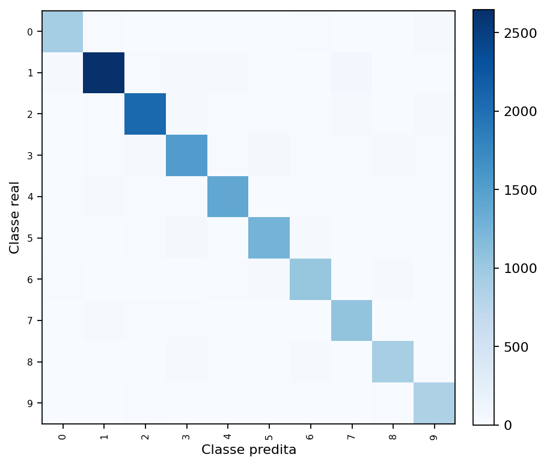
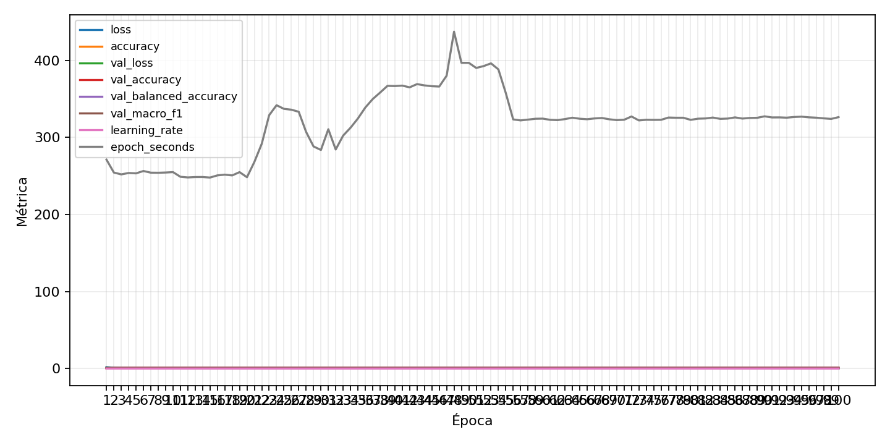

| n_samples | 14893 |
|---|---|
| loss | 0.26710888743400574 |
| accuracy | 0.9198281071644396 |
| balanced_accuracy | 0.9177863488638097 |
| macro_f1 | 0.9146747677589874 |


| Índice | Classe | Suporte | Precisão | Recall | F1 |
|---|---|---|---|---|---|
| 0 | 0 | 1004 | 0.9135922330097087 | 0.9372509960159362 | 0.9252704031465093 |
| 1 | 1 | 2844 | 0.9597680318956143 | 0.9310829817158931 | 0.9452079243262537 |
| 2 | 2 | 2210 | 0.9458963778083448 | 0.9334841628959276 | 0.9396492826235483 |
| 3 | 3 | 1707 | 0.8976470588235295 | 0.8939660222612771 | 0.8958027590255356 |
| 4 | 4 | 1497 | 0.9366244162775184 | 0.9378757515030061 | 0.9372496662216289 |
| 5 | 5 | 1390 | 0.9114015976761075 | 0.9028776978417267 | 0.9071196241416697 |
| 6 | 6 | 1155 | 0.8841567291311755 | 0.8987012987012987 | 0.8913696865607557 |
| 7 | 7 | 1142 | 0.8934563758389261 | 0.9325744308231173 | 0.9125964010282775 |
| 8 | 8 | 1006 | 0.8978174603174603 | 0.8996023856858847 | 0.8987090367428004 |
| 9 | 9 | 938 | 0.8776978417266187 | 0.9104477611940298 | 0.8937728937728937 |
{"adapter":"svhn","balance_mode":"class_weight","class_names":["0","1","2","3","4","5","6","7","8","9"],"dataset":"svhn","dataset_options":{},"dataset_root":"/home/msduda/datasets-tcc/svhn","native_channels":3,"normalization":"zscore","num_classes":10,"protocol":{"checkpoint_monitor":"val_macro_f1","dtype_policy":"mixed_float16","early_stopping":{"patience":10,"restore_best_weights":true},"evaluation_augmentation":false,"input_channels":"native","optimizer":"Adam","pretrained_weights":false,"reduce_lr_on_plateau":{"factor":0.3,"min_lr":1e-07,"patience":4},"resize":"proportional_padding","test_time_augmentation":false,"training_from_scratch":true},"seed":42,"source_fingerprint":"7db49be5026c8b7da2f91e322de4245a9678833ee2ae7cd8c1a5feac9c0da7c3","source_manifest":{"class_names":["0","1","2","3","4","5","6","7","8","9"],"joined_samples":99289,"metadata":{"include_extra":false,"layout":"svhn-mat"},"name":"svhn","native_channels":3,"source_path":"/home/msduda/datasets-tcc/svhn","splits":{"test":26032,"train":73257},"target_size":64},"target_size":64,"test_fraction":0.15,"train_fraction":0.7,"training":{"augmentation":{"brightness_delta":0.03,"contrast_lower":0.92,"contrast_upper":1.08,"cutout_max_frac":0.08,"cutout_prob":0.25,"flip_lr":true,"noise_std":0.005,"translate_frac":0.05,"zoom_max":1.04,"zoom_min":0.96},"batch_size":512,"default_image_size":64,"dtype_policy":"mixed_float16","early_stopping_patience":10,"extra_fraction":2.0,"image_size_overrides":{"gtsrb":128},"keras_verbose":1,"learning_rate":0.0003,"max_epochs":100,"preprocess_cache_max_mib":2048,"reduce_lr_factor":0.3,"reduce_lr_min_lr":1e-07,"reduce_lr_patience":4,"shuffle_buffer_max_mib":1024},"validation_fraction":0.15}
{"epochs_completed":100,"epochs_recorded":100,"evaluation_seconds":21.74373295800251,"fit_seconds_current_attempt":24840.168089545,"max_epoch_seconds":437.10676354099996,"max_epochs":100,"mean_epoch_seconds":336.00553932868513,"mean_train_examples_per_second":624.5720024271743,"median_train_examples_per_second":640.8312668957498,"min_epoch_seconds":247.81830623099813,"selected_checkpoint":"/mnt/e/tcc-benchmark/outputs/remaining-ram-capped/svhn/runs/svhn__zscore__class_weight__seed-42/checkpoints/best.keras","total_seconds":24528.40437099402,"training_seconds":24528.40437099402,"wall_seconds_current_attempt":24885.001245434}
{"elapsed_seconds":24885.110399044,"event_counts":{"data_preparation_end":1,"data_preparation_start":1,"epoch_end":73,"evaluation_end":1,"evaluation_start":1,"fit_end":1,"fit_start":1,"periodic":4906,"run_completed":1,"train_start":1},"generated_at":"2026-08-01T11:00:58.237+00:00","gpu_backend":"pynvml","interval_seconds":5.0,"metrics":{"cpu_percent":{"count":4987,"max":41.9,"mean":12.114116703428914,"min":0.0,"p50":12.1,"p95":13.2},"disk_data_free_bytes":{"count":4987,"max":998258253824.0,"mean":998258107505.5497,"min":998258098176.0,"p50":998258106368.0,"p95":998258110464.0},"disk_data_percent":{"count":4987,"max":2.7,"mean":2.7,"min":2.7,"p50":2.7,"p95":2.7},"disk_data_total_bytes":{"count":4987,"max":1081101176832.0,"mean":1081101176832.0,"min":1081101176832.0,"p50":1081101176832.0,"p95":1081101176832.0},"disk_data_used_bytes":{"count":4987,"max":27850723328.0,"mean":27850713998.45037,"min":27850567680.0,"p50":27850715136.0,"p95":27850719232.0},"disk_output_free_bytes":{"count":4987,"max":248594137088.0,"mean":248591098063.79788,"min":248587804672.0,"p50":248591331328.0,"p95":248593701683.2},"disk_output_percent":{"count":4987,"max":75.1,"mean":75.1,"min":75.1,"p50":75.1,"p95":75.1},"disk_output_total_bytes":{"count":4987,"max":1000186310656.0,"mean":1000186310656.0,"min":1000186310656.0,"p50":1000186310656.0,"p95":1000186310656.0},"disk_output_used_bytes":{"count":4987,"max":751598505984.0,"mean":751595212592.2021,"min":751592173568.0,"p50":751594979328.0,"p95":751598213939.2},"elapsed_seconds":{"count":4987,"max":24884.998012,"mean":12447.64667027331,"min":0.025688,"p50":12450.911264,"p95":23659.346644499998},"gpu_count":{"count":4987,"max":1.0,"mean":1.0,"min":1.0,"p50":1.0,"p95":1.0},"gpu_memory_percent":{"count":4987,"max":62.47377395629883,"mean":48.50235284629747,"min":21.4505672454834,"p50":46.73647880554199,"p95":57.72809982299805},"gpu_memory_total_bytes":{"count":4987,"max":8589934592.0,"mean":8589934592.0,"min":8589934592.0,"p50":8589934592.0,"p95":8589934592.0},"gpu_memory_used_bytes":{"count":4987,"max":5366456320.0,"mean":4166320385.078003,"min":1842589696.0,"p50":4014632960.0,"p95":4958806016.0},"gpu_temperature_c":{"count":4987,"max":57.0,"mean":46.773009825546424,"min":40.0,"p50":45.0,"p95":53.0},"gpu_utilization_percent":{"count":4987,"max":100.0,"mean":17.407459394425505,"min":0.0,"p50":14.0,"p95":54.0},"process_cpu_percent":{"count":4987,"max":508.3,"mean":149.39857629837576,"min":0.0,"p50":148.6,"p95":167.06999999999996},"process_read_bytes":{"count":4987,"max":1246367744.0,"mean":1245531672.948065,"min":1010647040.0,"p50":1245966336.0,"p95":1245966336.0},"process_rss_bytes":{"count":4987,"max":6901035008.0,"mean":6276460268.852617,"min":1278345216.0,"p50":6304206848.0,"p95":6749265920.0},"process_vms_bytes":{"count":4987,"max":51336990720.0,"mean":51119888687.48346,"min":39839109120.0,"p50":51246608384.0,"p95":51252002816.0},"process_write_bytes":{"count":4987,"max":1241088.0,"mean":1238957.4557850412,"min":4096.0,"p50":1241088.0,"p95":1241088.0},"ram_available_bytes":{"count":4987,"max":15292452864.0,"mean":10459092489.753359,"min":9841131520.0,"p50":10431848448.0,"p95":10794971136.0},"ram_percent":{"count":4987,"max":40.8,"mean":37.06490876278324,"min":8.0,"p50":37.2,"p95":39.9},"ram_total_bytes":{"count":4987,"max":16619089920.0,"mean":16619089920.0,"min":16619089920.0,"p50":16619089920.0,"p95":16619089920.0},"ram_used_bytes":{"count":4987,"max":6777958400.0,"mean":6159997430.246641,"min":1326637056.0,"p50":6187241472.0,"p95":6628634624.0}},"sample_count":4987,"schema_version":1}